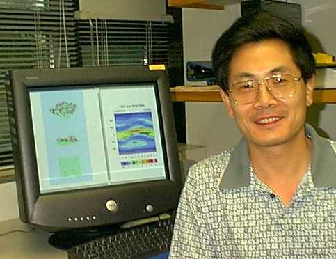

|  |
Xiaoqing Wu Assistant Professor Atmospheric Sciences B.S. Hangzhou University, 1983 M.S. Institute of Atmospheric Physics, Academia Sinica, 1986 Ph.D. UCLA , 1992 Iowa State
University |
My ultimate mission is to develop a physically and mathematically sound scheme that treats convective heating, moistening and momentum transport, clouds and cloud-radiation interaction consistently in order to understand the global impacts of these physical processes in general circulation models (GCMs) and numerical weather prediction (NWP) and to unveil the secrets of climate change and monsoon-related heavy rainfall. The development of cloud-resolving model (CRM) provides a unique tool for investigating the cloud-system-related problems.
Atmosperic Physics I (Meteo 341)
Atmosperic Physics II (Meteo 342)
Wu, X., and M. Yanai, 1994: Effects of vertical wind shear on the cumulus transport of momentum: Observations and parameterization. J. Atmos. Sci., 51, 1640-1660.Wu, X., 1993: Effects of cumulus ensemble and mesoscale stratiform clouds in midlatitude convective systems. J. Atmos. Sci., 50, 2496-2518.
Wu, X., and M. W. Moncrieff, 2001: Long-term behavior of cloud systems in TOGA COARE and their interactions with radiative and surface processes. Part III: Effects on the energy budget and SST. J. Atmos. Sci., 58, 1155-1168.
Wu, X., 2002: Effects of ice microphysics on tropical radiative-convective-oceanic quasi-equilibrium states. J. Atmos. Sci., 59, 1885-1897.
Zhang, G.-J., and X. Wu, 2002: Convective momentum transport and perturbation pressure field from a cloud-resolving model simulation. J. Atmos. Sci., accepted.
Wu, X., and M. W. Moncrieff, 1996: Recent progress on cloud-resolving modeling of TOGA COARE and GATE cloud systems. Workshop Proceedings, New Insights and Approaches to Convective Parameterization, ECMWF, Reading, United Kingdom, November 4-7, 1996, 128-156.
Wu, X., and M. W. Moncrieff, 2001: Sensitivity of single-column model solutions to convective parameterizations and initial conditions. J. Climate, 12, 2563-2582.
Wu, X., and M. A. LeMone, 1999: Fine structure of cloud patterns within the intraseasonal oscillation during TOGA COARE. Mon. Wea. Rev., 127, 2503-2513.
Wu, X., and M. W. Moncrieff, 1999: Effects of sea surface temperature and large-scale dynamics on the thermodynamic equilibrium state and convection over the tropical western Pacific. J. Geophys. Res., 104, 6093-6100.
Grabowski, W. W., X. Wu and M. W. Moncrieff, 1996: Cloud resolving modeling of tropical cloud systems during Phase III of GATE. Part I: Two-dimensional experiments. J. Atmos. Sci., 53, 3684-3709.
Grabowski, W. W., X. Wu, and M. W. Moncrieff, 1999: Cloud resolving modeling of tropical cloud systems during Phase III of GATE. Part III: Effects of cloud microphysics. J. Atmos. Sci., 56, 2384-2402.
Wu, X., W. W. Grabowski, and M. W. Moncrieff, 1998: Long-term behavior of cloud systems in TOGA COARE and their interactions with radiative and surface processes. Part I: Two-dimensional Modeling Study. J. Atmos. Sci., 55, 2693-2714.
Wu, X., W. D. Hall, W. W. Grabowski, M. W. Moncrieff, W. D. Collins, and J. T. Kiehl, 1999: Long-term behavior of cloud systems in TOGA COARE and their interactions with radiative and surface processes. Part II: Effects of ice microphysics on cloud-radiation interaction. J. Atmos. Sci., 56, 3177-3195.
Mapes, B., and X. Wu, 2001: Convective eddy momentum tendencies in long cloud-resolving model simulations. J. Atmos. Sci., 58, 517-526.
Wu, X., M. W. Moncrieff, and K. A. Emanuel, 2000: Evaluation of large-scale forcing during TOGA COARE for cloud-resolving models and single-column models. J. Atmos. Sci., 57, 2977-2985.
Wu, X., and M. W. Moncrieff, 1996: Collective effects of organized convection and their approximation in general circulation models. J. Atmos. Sci., 53, 1477-1495.
Grabowski, W. W., X. Wu, M. W. Moncrieff, and W. D. Hall, 1998: Cloud resolving modeling of tropical cloud systems during Phase III of GATE. Part II: Effects of resolution and the third spatial dimension. J. Atmos. Sci., 55, 3264-3282.
Wu, X., 1994: Diagnostic and semiprognostic studies of cumulus effects in the presence of mesoscale circulations. Mon. Wea. Rev., 122, 652-670.